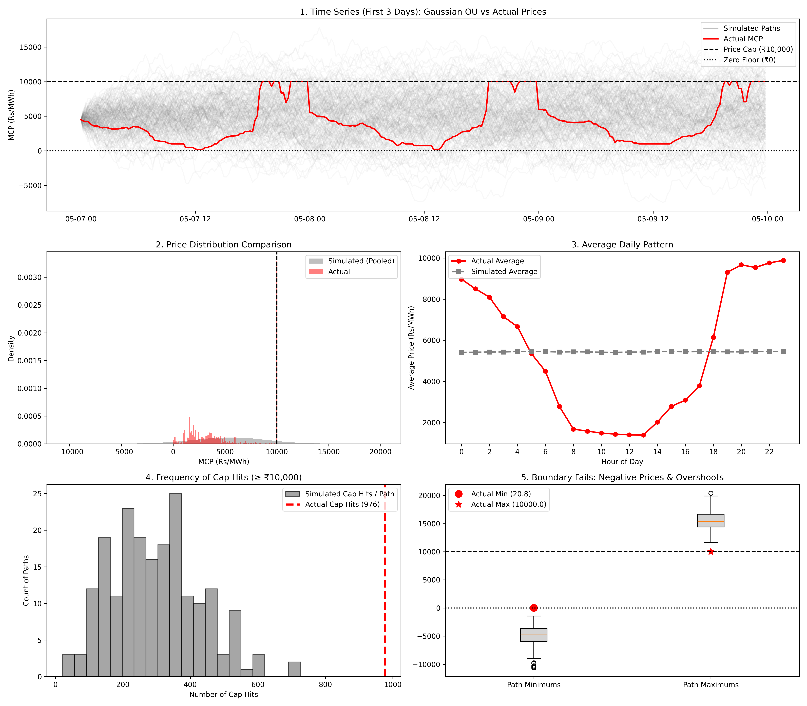
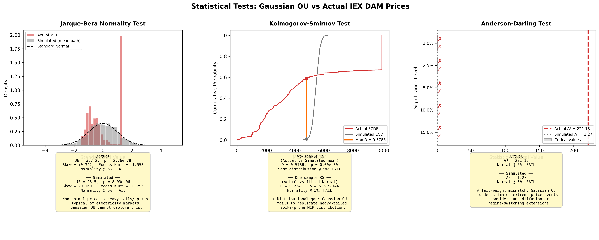

Gaussian Ornstein-Uhlenbeck Process
Welcome to the documentation for the IEX DAM stochastic price modelling project. This project calibrates a Gaussian Ornstein-Uhlenbeck (OU) process to real 15-minute Market Clearing Price (MCP) data from the Indian Energy Exchange Day-Ahead Market, simulates 200 Monte Carlo paths, and rigorously stress-tests the Gaussian assumption — building the quantitative case for why non-Gaussian extensions are necessary.
Dataset
Data sourced from the Indian Energy Exchange (IEX) Day-Ahead Market Snapshot.
| Property | Value |
|---|---|
| Period | 7 May 2026 – 6 June 2026 (31 days) |
| Granularity | 15-minute intervals (96 time blocks/day) |
| Observations | 2,976 (after cleaning) |
| Target variable | MCP (Rs/MWh) — Market Clearing Price |
| Price range | ₹20.81 – ₹10,000.00 (regulatory cap) |
| Mean MCP | ₹5,292.27/MWh |
| Median MCP | ₹3,956.71/MWh |
The large gap between mean and median (≈₹1,335) immediately signals a skewed, non-symmetric distribution — the first hint that a Gaussian model will struggle.
Mathematical Formulation
The Ornstein-Uhlenbeck SDE
The OU process is the continuous-time analogue of a stationary AR(1) process, defined by the stochastic differential equation:
| Parameter | Symbol | Interpretation |
|---|---|---|
| Mean-reversion speed | \(\theta\) | Rate at which prices pull back toward \(\mu\) |
| Long-run mean | \(\mu\) | Equilibrium price level |
| Volatility | \(\sigma\) | Diffusion coefficient |
| Wiener process | \(W_t\) | Standard Brownian motion driver |
The half-life of a price shock — the time for half the deviation from \(\mu\) to dissipate — is given by:
Exact Discrete Transition
For a time step \(\Delta t = 0.25\) hours (15 minutes), the exact solution of the SDE gives:
where \(Z_t \sim \mathcal{N}(0,1)\) is an i.i.d. standard normal innovation.
Parameter Estimation
OLS on the Discretised AR(1)
The discrete transition is linear in \(X_t\), so the OU parameters are recovered by regressing \(X_{t+1}\) on \(X_t\):
The continuous-time parameters are then recovered as:
where RSE is the residual standard error of the regression.
Calibrated Parameters
| Parameter | Value | Interpretation |
|---|---|---|
| \(\theta\) | 0.0632 hr⁻¹ | Half-life of price shock: 10.97 hours |
| \(\mu\) | ₹5,408.71/MWh | Equilibrium (long-run mean) price |
| \(\sigma\) | ₹1,284.88/MWh | Diffusion coefficient |
| R² | 0.9957 | Near-unit-root AR(1) — strong persistence |
The R² of 0.9957 confirms that electricity prices are highly autocorrelated at the 15-minute timescale. The slow mean-reversion speed (\(\theta = 0.063\)) implies shocks take nearly 11 hours to halve in magnitude — consistent with the diurnal price cycles visible in the data.
Monte Carlo Simulation
200 independent price paths are generated using the exact discrete OU transition, each with 2,976 steps starting from the first observed price \(X_0 = ₹4,499.07\).
The simulation immediately reveals three structural failures of the Gaussian model:
- No price floor — paths routinely go negative (actual prices are bounded at ₹0)
- No price cap — paths overshoot ₹10,000 freely (actual cap at ₹10,000/MWh)
- No diurnal structure — simulated hourly averages are flat; actual prices follow a pronounced duck-curve pattern peaking around midnight and troughing at noon

Figure 1: (1) First 3 days of actual vs 200 simulated paths. (2) Pooled simulated density vs actual — Gaussian OU spreads symmetrically while actual prices cluster at the cap. (3) Hourly average comparison showing the duck-curve gap. (4) Simulated cap-hit distribution vs actual 976 hits. (5) Path minimum/maximum boxplots showing negative price generation and cap overshoots.Failure Analysis
Cap-Hit Frequency
The actual data contains 976 observations at the ₹10,000 cap (32.8% of all time blocks). Simulated paths average only ~300 cap hits per path — less than a third of the actual frequency. This underlines that the price-cap clustering is driven by a structural feature (supply scarcity spikes) that a diffusion model cannot replicate.
Boundary Violations
| Boundary | Actual behaviour | Gaussian OU behaviour |
|---|---|---|
| Lower bound | Always ≥ ₹0.00 (physical) | Generates negative prices |
| Upper bound | Hard cap at ₹10,000 | No ceiling; paths reach ₹20,000+ |
Diurnal Pattern
The actual hourly average profile shows a clear duck curve: prices peak above ₹9,000/MWh in the late evening (hours 18–23), drop to roughly ₹1,500/MWh during mid-day solar surplus hours (hours 9–14), and rise sharply again after sunset. The Gaussian OU mean path is flat at approximately ₹5,400/MWh across all hours — it has no mechanism for time-of-day structure.
Statistical Validation
Three complementary tests are used to assess the Gaussian assumption.
| Test | Purpose | Null hypothesis |
|---|---|---|
| Jarque-Bera | Normality via skewness + kurtosis | Data is normally distributed |
| Kolmogorov-Smirnov (two-sample) | Distributional equivalence | Actual and simulated come from the same distribution |
| Kolmogorov-Smirnov (one-sample) | Goodness-of-fit to Normal | Actual data follows a fitted Normal |
| Anderson-Darling | Tail-sensitive normality | Data is normally distributed (emphasises tails) |
Results
| Test | Statistic | p-value | Verdict |
|---|---|---|---|
| Jarque-Bera (actual) | JB = 357.18, Skew = +0.342, Ex. Kurt = −1.553 | 2.76 × 10⁻⁷⁸ | Normality rejected |
| Jarque-Bera (simulated) | JB = 23.5 | 8.03 × 10⁻⁶ | Normality rejected |
| KS two-sample | D = 0.5786 | ≈ 0 | Same distribution rejected |
| KS one-sample | D = 0.2341 | 5.74 × 10⁻¹⁴⁴ | Normality rejected |
| Anderson-Darling (actual) | A² = 221.18 vs critical 1.035 (1%) | — | Exceeds critical value by 213× |

Figure 2: (Left) Jarque-Bera — standardised histograms of actual and simulated prices against the fitted Normal curve. (Centre) KS test — empirical CDFs with the maximum deviation D = 0.5786 marked at ≈₹4,500/MWh. (Right) Anderson-Darling — test statistic vs critical values at all five significance levels; actual A² = 221.18 is off the chart.Interpretation
Jarque-Bera: The excess kurtosis of −1.553 indicates a platykurtic (flat-topped) distribution — not the light-tailed bell curve a Gaussian OU produces. The positive skew (+0.342) reflects the price-cap cluster pulling the right tail.
KS two-sample: The maximum CDF divergence of D = 0.5786 occurs near ₹4,500/MWh — the transition between solar-surplus midday hours and thermal dispatch hours. At this price level, the actual and simulated cumulative probabilities diverge by 57.9 percentage points.
Anderson-Darling: A² = 221.18 is 213 times above the most stringent critical value (1.035 at the 1% significance level). This statistic is tail-sensitive by design, confirming the catastrophic mismatch in extreme-price behaviour.
Conclusions
The Gaussian OU process captures the dominant feature of electricity prices — mean reversion — but fails to reproduce the structural features that make electricity markets unique:
- Heavy-tailed, bimodal price distribution driven by regulatory caps and solar intermittency
- Hard physical bounds (₹0 floor, ₹10,000 cap) that a Gaussian diffusion ignores
- Strong intra-day seasonality (duck curve) requiring a time-varying mean function
- Frequent price spikes caused by supply-demand imbalances that demand jump components
A Gaussian OU model is a useful calibration baseline but is insufficient for pricing, risk management, or forecasting in Indian electricity markets.
Future Extensions
1. Lévy-Driven OU Process
Replace the Gaussian innovations \(Z_t \sim \mathcal{N}(0,1)\) with a Normal Inverse Gaussian (NIG) or jump-diffusion driver:
where \(L_t\) is a Lévy process. This naturally reproduces heavy tails and spike behaviour without requiring a separate jump component.
2. Seasonal Mean Function
Introduce a deterministic time-varying mean \(\mu(t)\) capturing the diurnal duck curve:
\(\mu(t)\) can be estimated as the empirical average MCP at each of the 96 daily time blocks, effectively separating the seasonal signal from the stochastic residual.
3. Two-Factor Decomposition
Decompose the log-price into a base signal (slow mean-reverting OU) and a spike component (fast-decaying jump process):
This is the approach advocated by Benth, Šaltytė Benth & Koekebakker (2008) for Nordic power markets, and is directly applicable to IEX DAM data.
References
- Benth, F. E., Šaltytė Benth, J., & Koekebakker, S. (2008). Stochastic Modelling of Electricity and Related Markets. World Scientific.
- Shreve, S. E. (2004). Stochastic Calculus for Finance II: Continuous-Time Models. Springer.
- Stoft, S. (2002). Power System Economics. IEEE Press / Wiley-Interscience.
- QuantStart (2024). Ornstein-Uhlenbeck Process Simulation with Python. quantstart.com